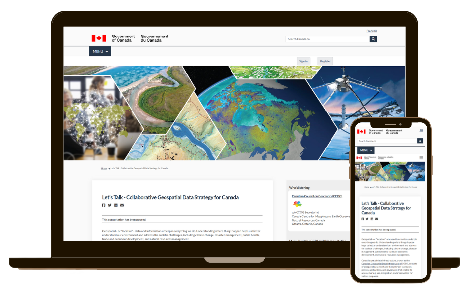

Case Study 5
Collaborative Geospatial Data Strategy for Canada Engagement Callout
Government of Canada - Natural Resources Canada
Role: Graphic Designer & Communications Co-lead
Tools: Illustrator · Photoshop · XD · M365 · Trello
Role: Graphic Designer & Communications Co-lead
Tools: Illustrator · Photoshop · XD · M365 · Trello
As the co-lead for the strategic communications plan supporting the Collaborative Geospatial Data Strategy for Canada callout, I planned and created materials to promote public participation in shaping the future of how Canadians access, use, and share location data. This initiative aimed to strengthen national collaboration on geospatial standards, innovation, and accessibility.
Engaging diverse audiences in a highly technical and policy-driven topic posed a challenge. The communications approach needed to simplify complex concepts, encourage participation, and align messaging across multiple government partners while maintaining a professional and inclusive tone.
Working closely with the Canadian Geospatial Data Infrastructure (CGDI) communications team and interdepartmental stakeholders, I co-led the launch campaign for the callout and supported UX review efforts to ensure a cohesive and user-friendly experience.
The campaign successfully raised awareness and engagement around the Collaborative Geospatial Data Strategy initiative by:
This project deepened my understanding of how strategic design and plain-language copywriting can make technical policy initiatives more engaging and inclusive. It also reinforced the impact of visual communication in strengthening national collaboration across government, private sector, and the public.